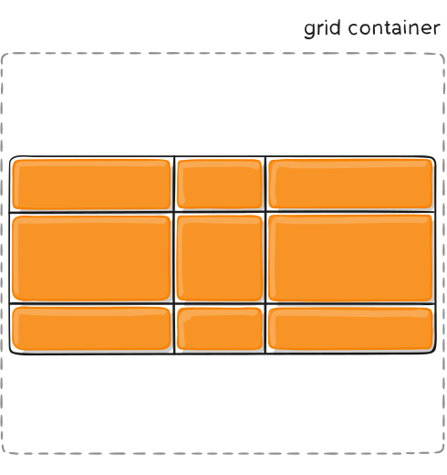
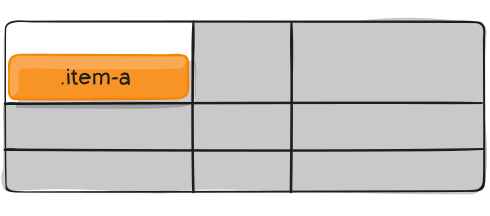

CSS Grid
Created by Aliaksandr PauliukavetsContents
Terminology
Grid Container and Grid Items
.grid-container {
display: grid;
display: inline-grid;
display: subgrid;
}

Special rules:
- The float and clear properties do not apply to grid items
- The vertical-align property does not affect grid items
- The ::first-line and ::first-letter pseudo-elements do not apply to the grid container
Grid Lines
Grid lines are the horizontal and vertical lines which divide the grid. Each grid line has a referencing number, starting from the outer-most border of the grid container.

Grid Columns, Grid Rows, and Grid Tracks
.grid-container {
display: grid;
grid-template-columns: 65px 1fr 65px;
grid-template-rows: 100px 100px 100px;
}
Grid Cell
See the Pen Grid-Cell by mbulldozer (@mbulldozer) on CodePen.
Grid Area
See the Pen Grid-Area by mbulldozer (@mbulldozer) on CodePen.
Fr Unit
See the Pen Fr unit by mbulldozer (@mbulldozer) on CodePen.
Justification and Alignment
Properties:
- justify-items
- align-items
- justify-content
- align-content
- justify-self
- align-self
- place-self
justify-items: start | end | center | stretch
| start | end |
 |
 |
| center | stretch |
 |
 |
align-items: start | end | center | stretch
| start | end |
 |
 |
| center | stretch |
 |
 |
justify-content: start | end | center | stretch | space-around | space-between | space-evenly
| start | end |
 |
 |
| center | stretch |
 |
 |
| space-around | space-between |
 |
 |
| space-evenly | |
 |
align-content: start | end | center | stretch | space-around | space-between | space-evenly
| start | end |
 |
 |
| center | stretch |
|  |  |
| space-around | space-between |
 |
 |
| space-evenly | |
 |
justify-self: start | end | center | stretch
| start | end |
 |
 |
| center | stretch |
 |
 |
align-self: start | end | center | stretch
| start | end |
 |
 |
| center | stretch |
 |
 |
place-self
(sets both the align-self and justify-self properties)
| center | center stretch |
 |
 |
Grid Gap
Properties:
- grid-column-gap
- grid-row-gap
- grid-gap (shorthand for grid-row-gap and grid-column-gap)
.grid-container {
grid-template-columns: 100px 100px 100px;
grid-template-rows: 50px 50px 50px;
grid-column-gap: 10px;
grid-row-gap: 15px;
}

Benefits
- order of elements in the markup can be any
- easy adaptation using media queries
- make your HTML cleaner
- and others